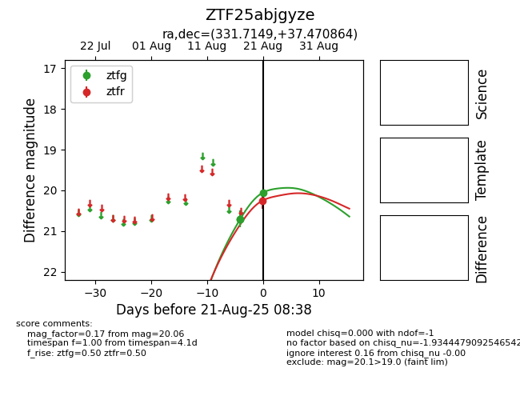

Target ZTF25abjgyze at 2025-08-21 08:38, see:
FINK: fink-portal.org/ZTF25abjgyze
Lasair: lasair-ztf.lsst.ac.uk/objects/ZTF25abjgyze
ALeRCE: alerce.online/object/ZTF25abjgyze
alt names
ZTF25abjgyze (ztf,alerce)
coordinates:
equatorial (ra, dec) = (331.7149,+37.47086)
galactic (l, b) = (90.2495,-14.74496)
photometry
last ztfg=20.06, ztfr=20.25
3 ztfg, 1 ztfr detections
